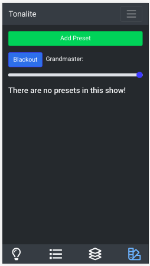

When used for a permanent installation, there needs to be a way for users who don't have experience with the program to turn on lights. You can set up presets which are one-click overrides that allow easy control of chosen lights.
